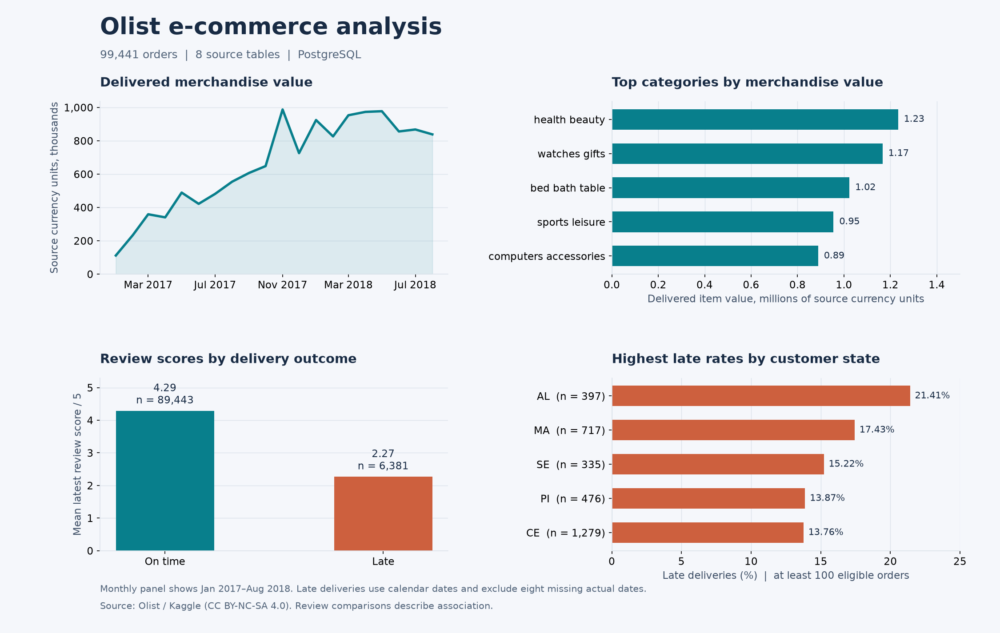

The business question
Which customer locations and product categories contribute the most delivered merchandise value? Where are deliveries less reliable, how do reviews differ for late orders, and how often do customers purchase again within the observed period?
The project connects eight source files covering customers, orders, items, payments, reviews, products, sellers and category translations. It examines 99,441 orders and 112,650 item records from Olist's 2016–2018 marketplace sample.
The approach
Model the relationships
Create eight PostgreSQL tables with primary and foreign keys. Use customer_id to connect an order to its customer record and customer_unique_id to recognise repeat purchasers.
Preserve accurate totals
Aggregate item and payment records by order before joining them. Select one latest review per order with a deterministic window-function rule, while preserving every source review record.
Build reproducible analyses
Use joins, CTEs, window functions, percentiles, ranking and cohort analysis across 15 business questions. Export the results and reconcile the reported totals against the source files.
What the analysis found

| Measure | Result | Population |
|---|---|---|
| Late deliveries | 6,534 orders (6.77%) | 96,470 delivered orders with actual and estimated delivery dates |
| Mean review score for on-time orders | 4.29 out of 5 | 89,443 reviewed orders, using the latest response per order |
| Mean review score for late orders | 2.27 out of 5 | 6,381 reviewed orders, using the latest response per order |
| Observed repeat purchasers | 2,801 customers (3.00%) | Customers with at least one delivered order in the sample |
São Paulo contributes 38.33% of delivered merchandise value. Among states with at least 100 eligible deliveries, Alagoas has the highest late rate at 21.41% across 397 orders. Rio de Janeiro combines substantial order volume with a 12.11% late rate.
The association between delayed delivery and lower review scores gives a concrete starting point for investigating customer experience alongside geography, seller mix and product categories.
Decision implications
- Investigate purchase-to-carrier and carrier-to-customer intervals in locations with high late rates and substantial order volumes.
- Review freight relative to merchandise value by category when assessing fulfilment options.
- Compare customer cohorts with similar follow-up periods before drawing conclusions about repeat purchasing.
These are proposed follow-ups from the sample. The project reports analytical findings and has no measured operational intervention.
Validation
The complete dataset was imported and reloaded successfully in PostgreSQL 18.6. All 15 business queries, source-count controls and monetary reconciliation checks passed, and their results matched an independent execution in embedded PostgreSQL 17.5.
GitHub Actions runs PostgreSQL 16 checks using synthetic records designed to exercise multiple items, payments and reviews per order, missing dates, same-day deliveries, empty calendar months and cohort observation windows.
Scope and interpretation
Late delivery means the actual delivery day exceeds the estimated day. Eight delivered orders with missing actual dates are excluded from that rate. Review comparisons use the latest recorded response per order and describe an association.
Merchandise value sums item prices for delivered orders. Freight and recorded payments are separate measures. The source lacks the cost and refund records needed to calculate profit or accounting net revenue.
Repeat purchasing is measured within the observed dataset. Customers entering near the end have shorter follow-up, and very small cohorts can produce extreme percentages. The analysis represents Olist's historical sample.
Data modelling, SQL logic, metric choices and validation are documented in the repository.
Source and project files
The Brazilian E-Commerce Public Dataset by Olist was provided by Olist and collaborators under CC BY-NC-SA 4.0. The project records source fingerprints and provides instructions for reproducing the analysis.